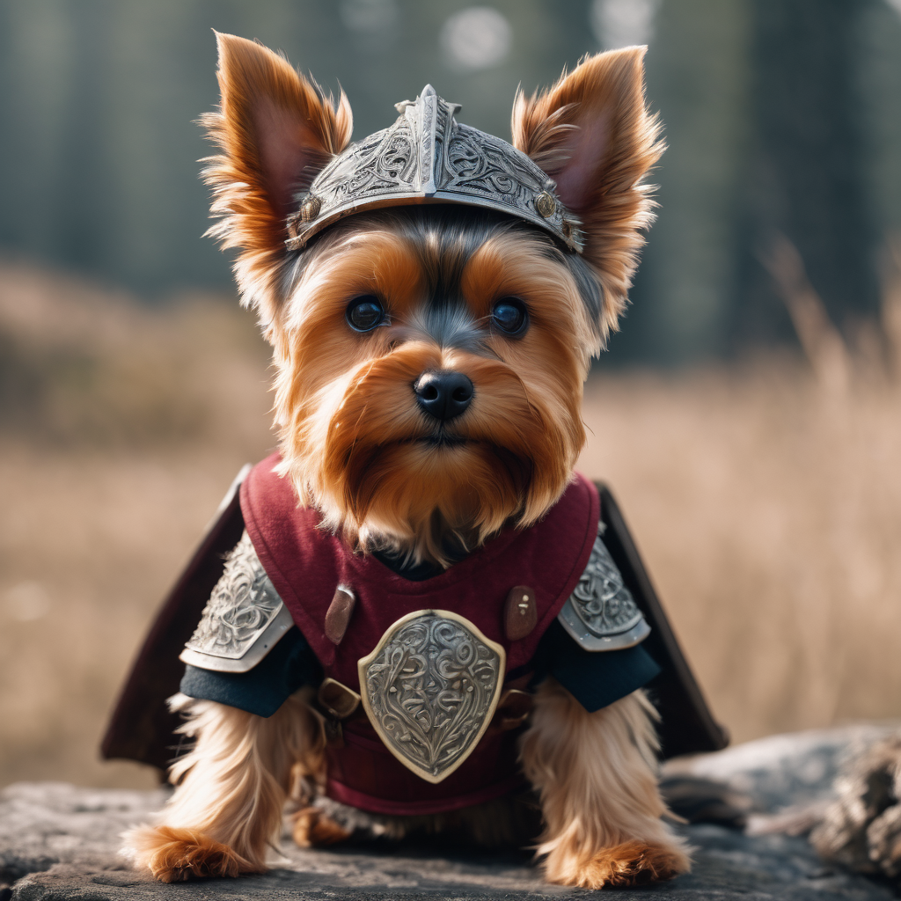
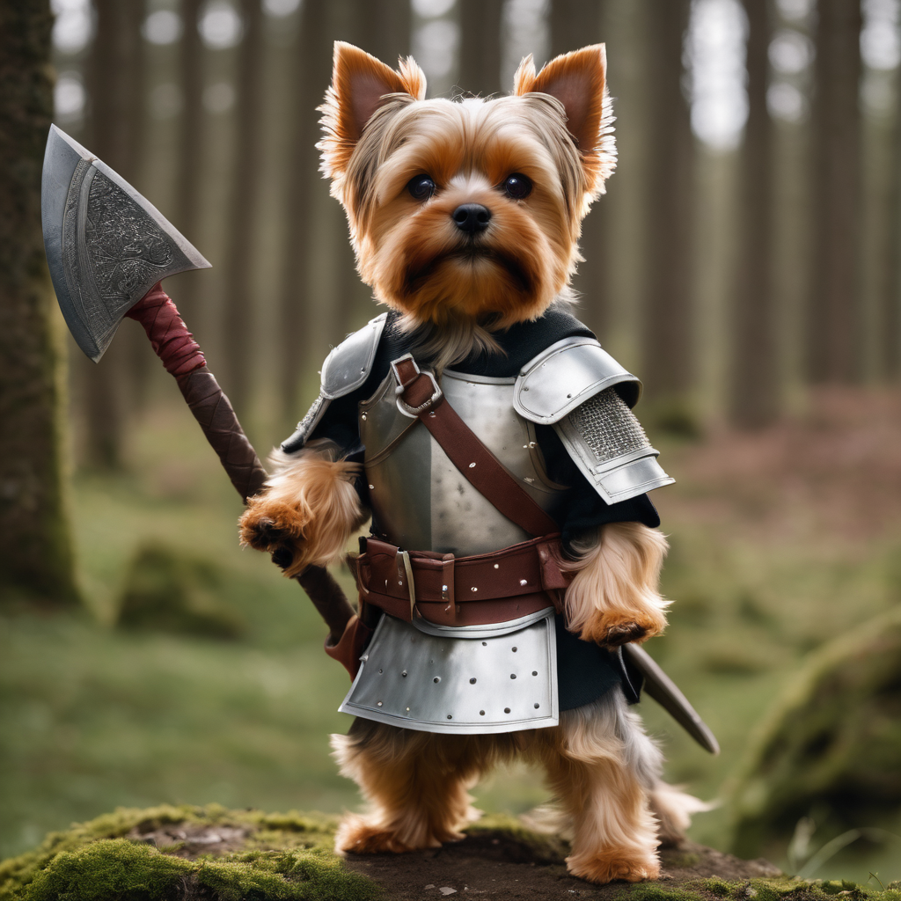
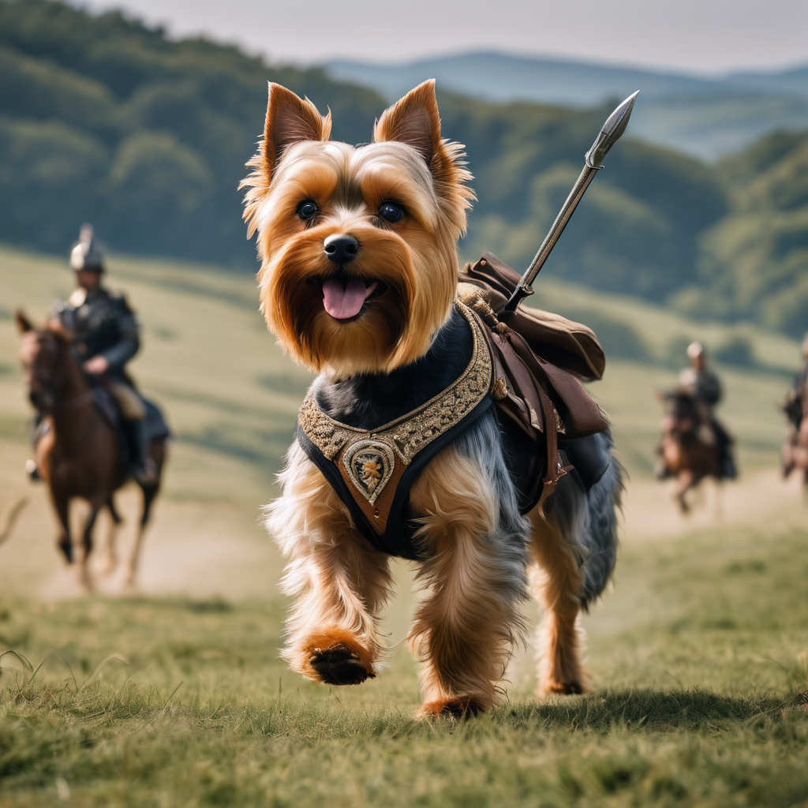

La vida de Charlie
En los lejanos días del Imperio Romano, en la ciudad de Roma, vivía un Yorkshire Terrier valiente y astuto llamado Charlie. Aunque su tamaño era diminuto en comparación con los grandes líderes humanos de la época, su corazón y determinación eran tan imponentes como los colosos que adornaban la ciudad. Charlie, desde cachorro, demostró una inteligencia y astucia extraordinarias. Fue adoptado por un noble romano llamado Lucius Maximus, quien, fascinado por la tenacidad del pequeño can, decidió entrenarlo como si fuera un verdadero general. Con el tiempo, Charlie se convirtió en el general más respetado del ejército romano, conocido por su feroz lealtad y habilidades tácticas incomparables. 
El diminuto general de cuatro patas lideró a las legiones romanas a través de numerosas campañas exitosas. En la batalla de las Termópilas Caninas, Charlie dirigió a sus tropas con una valentía asombrosa, enfrentándose a enemigos mucho más grandes con una estrategia ingeniosa. Ganó la admiración de todos, humanos y animales por igual, mientras sus hazañas se volvían leyendas en todo el imperio. Su astucia era evidente en la batalla de Cannae, donde, superado en número, utilizó tácticas innovadoras para rodear a las fuerzas enemigas y lograr una victoria aplastante. En reconocimiento a su valentía, el emperador mismo le otorgó el título de "Charlie Maximus", en honor a su dueño Lucius Maximus y a sus propias proezas.
Pero no todas las batallas eran en el campo de guerra. En el Senado Romano, Charlie demostró ser un diplomático consumado. Con su mirada penetrante y ladrido agudo, convencía a los senadores de seguir el camino que consideraba más sabio para el imperio. Era un estratega en el campo de batalla y un hábil político en las intrincadas maquinaciones del poder romano.
A medida que los años pasaban, Charlie se retiró de la vida militar, pero su leyenda perduró. Se instaló en la finca de Lucius Maximus, donde vivió sus últimos días rodeado de lujos y comodidades. Cada año, en el día de su jubilación, se celebraba una festividad en honor a Charlie Maximus, el Yorkshire Terrier que desafió todas las expectativas y se convirtió en una leyenda del Imperio Romano.